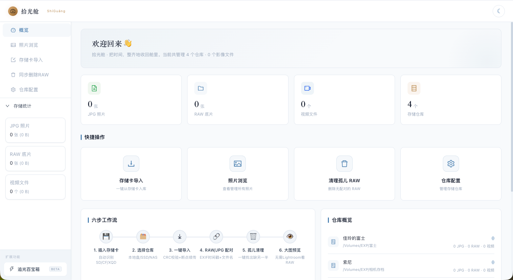
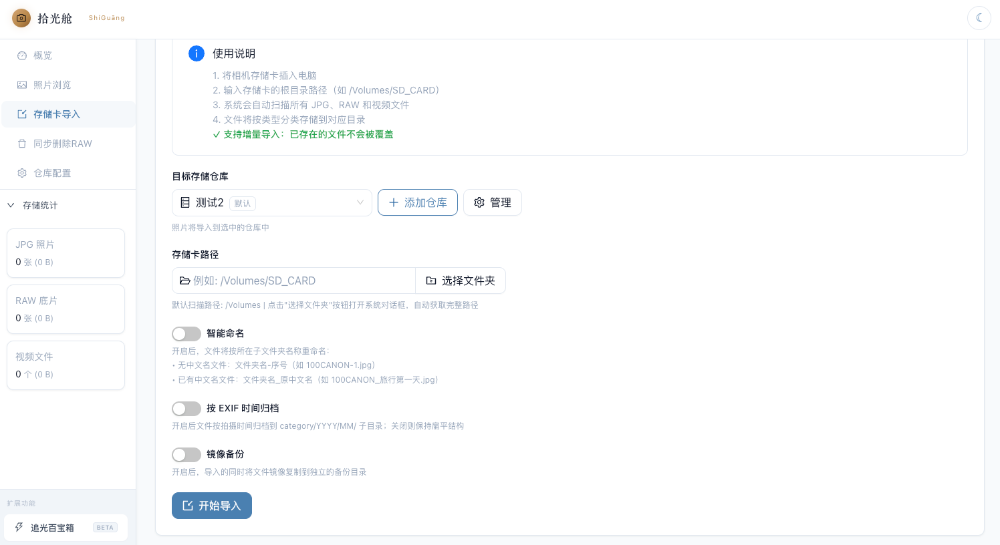
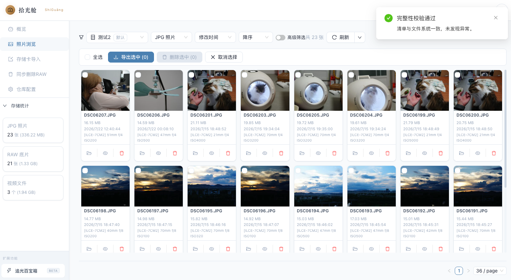
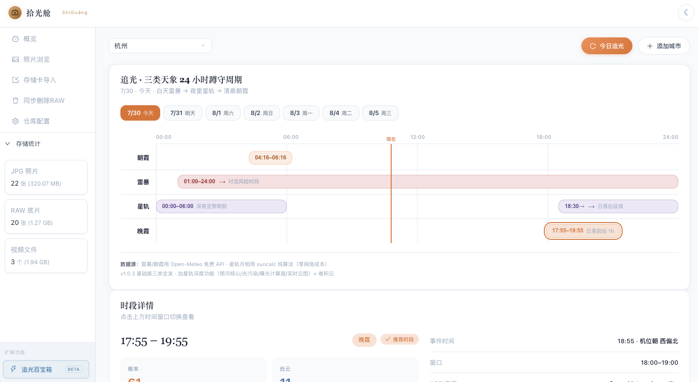
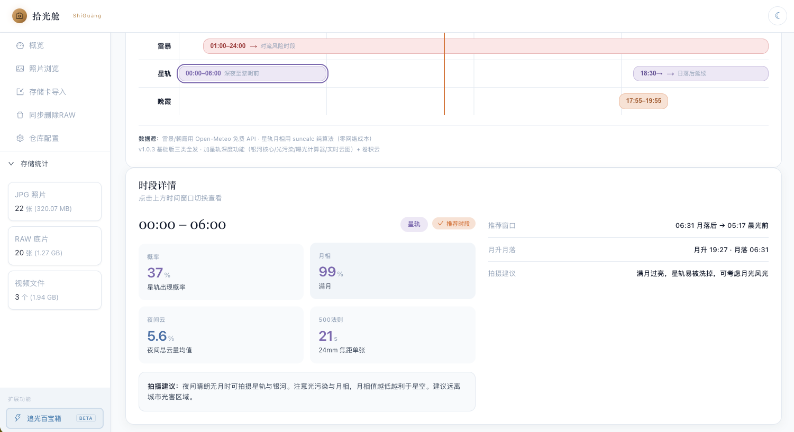

拾光舱
摄影师的可信影像仓库 + 蹲守决策助手
黑场渐入，光标停在桌面拾光舱图标上；轻点打开，过渡到 Dashboard 总览。

Dashboard 总览：仓库统计、六步工作流、最近照片。拍完三四百张照片，回家把存储卡往电脑上一插，接下来就是一整晚的折磨：拷贝没有进度条，几百 G 不敢中断，怕拷到一半出问题；RAW 和 JPG 配对混乱，删一张忘一张，久了硬盘里堆满孤儿文件；想找某次活动的高 ISO 样片，得逐盘翻文件夹；蹲个朝霞、星轨更是全靠经验和运气，天气 App 只告诉你“今天多云”，不告诉你今天几点晚霞概率最高。
这就是我们做拾光舱的原因。
镜头从 Dashboard 平移到左侧导航，依次点亮“照片浏览”“存储卡导入”“追光百宝箱”三个页签，暗示完整链路。
拾光舱是一款跨平台桌面应用，macOS 和 Windows 开箱即用。它覆盖摄影师“出门前该不该去、拍完之后怎么归、几年后怎么找”的完整链路，把创作之外的收尾工作，从一整晚压缩到一杯咖啡的时间。
复赛阶段，它完成了两次跃迁：从“会拷贝的工具”升级成“可信任的仓库”，又从“拍完才打开”延伸到“出门前就要打开”。
导入页操作演示，随后切到照片浏览高级筛选，再切完整性校验结果。

导入页：归档开关 + 镜像备份开关。 高级筛选：多条件标签。
高级筛选：多条件标签。

仓库完整性校验结果。先看可信归档。插卡、选仓库、一键导入。并发 8 路复制，实时显示总数、已处理、剩余时间。每张照片边复制边算 SHA-256 哈希，写入仓库清单，命中已存在的哈希自动跳过，杜绝重复入库。
可选按 EXIF 拍摄时间归档，文件自动落到年、月目录里；还能开启双盘镜像备份，主仓库写完同步到镜像盘，硬盘坏了还有第二份。
进照片浏览页，高级筛选支持日期、相机、镜头、焦距、光圈、ISO、文件名七个维度组合，想找高 ISO 样片几秒就筛出来。担心仓库有损坏？一键完整性校验，缺失、损坏、未追踪三类问题一目了然。再加上 RAW 和 JPG 的双因子配对，准确率超过 98%，孤儿 RAW 一键清理。
切到“追光百宝箱”页签，暖橙色调。先展示 7 天甘特时间轴，再点中一个高概率时段，展开蹲守建议卡。

7 天四类天象甘特时间轴。
星轨蹲守建议卡：月相 + 500 法则。但归档再好，也只是事后环节。摄影爱好者每天真正头疼的，是今晚到底要不要出门蹲星轨。
打开追光百宝箱。选一座城市，未来 7 天的朝霞、晚霞、雷暴、星轨四类天象概率，一条甘特时间轴铺开——白天蹲雷暴、傍晚蹲晚霞、夜里蹲星轨、清晨蹲朝霞，24 小时蹲守节奏一眼看清。
点中一个高概率时段，蹲守建议卡告诉你机位朝向、日出日落时间、CAPE 峰值、设备安全须知，还有星轨的月相、月升月落、500 法则最长曝光、堆栈张数建议。
评分依据不是任何人的私房经验，而是 Open-Meteo 公开气象数据加 suncalc 天文算法加权，谁都能复现。第 5 到 7 天数据不确定性更高，界面也老实标灰提醒。
回到 Dashboard 全景，缓缓拉远。底部浮现应用名“拾光舱”与团队信息，淡出。
拾光舱不跟 Lightroom 争调色，而是补上它前面的那一环——把素材安全、整齐地收进仓库；追光又把覆盖范围往前推一步，让拾光舱从“按周打开”变成“按日打开”。
这是一支三人小队，三个摄影爱好者，全程在 TRAE Work 里用 AI 编程完成。如果你也是个还在用系统复制粘贴整理素材、蹲守天象全凭运气的爱好者，试试拾光舱，把时间还给创作。
录制小贴士
- 口播词约 890 字，按 220 字/分约 4 分钟；演示画面切换时适当停顿，整体落在 4 分到 4 分半。
- 可信归档段落是节奏最快的一段，建议提前把导入、筛选、校验三个界面操作练顺，避免念词和画面脱节。
- 追光段落切到追光页签时，强调暖橙色调的视觉差异，呼应“从按周到按日”的陪伴感。
- 产品没有 AI 识别 / 人脸识别 / 地图视图功能，口播中已统一用“算法”“公开数据加权”表述，录制时不必临场加“智能识别”之类说法。
- 结尾“把时间还给创作”一句建议放慢、加重，作为收束。
截图位于 competition/shots/ · 本稿可直接在浏览器打开对照录制